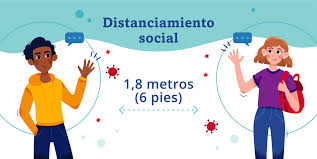
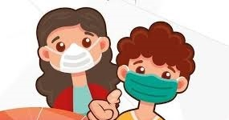

Protejase y proteja a los demas
La mejor manera de prevenir la enfermedad es evitar la exposicion a este virus. Puede tomar medidas para desacelerar la propagacion.

respete las medidas de distanciamiento
Aproximadamente a 6 pies de distacia es lo que se recomienda estar ante otro individuo Esto muy importante para prevenir la propagación del COVID-19

Lavese las manos con frecuencia
Es importante el lavado de manos con agua y jabon, si no dispone de agua y jabon, use algún desinfectante de manos que contenga al menos un 60 % de alcohol.

Use el tapabocas
Es importante Cubrirse la boca y la nariz con una mascarilla cuando esta rodeado de otras personas como manera de prevencion